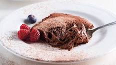
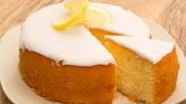
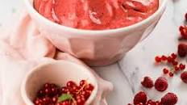

Receitas para Sobremesas
Delicie-se com sobremesas irresistíveis para adoçar o seu dia!

Mousse de Chocolate
Área: Sobremesa
Dificuldade: Fácil
Tempo de preparação: 10min
Tempo total: 3h 20min
Porções: 6 doses
Ingredientes
- 50 g açúcar
- 200 g chocolate para culinária (mín. 50% cacau)
- 100 g natas
- 4 gemas de ovo
- 4 claras de ovo
- 1 pitada de sal
Preparação
- Derreta o chocolate com as natas em fogo baixo.
- Adicione as gemas e misture bem.
- Bata as claras em castelo com o sal e o açúcar.
- Envolva as claras na mistura de chocolate delicadamente.
- Distribua em taças e leve ao frigorífico por pelo menos 3 horas.

Bolo de Limão
Área: Sobremesa
Dificuldade: Fácil
Tempo de preparação: 10min
Tempo total: 55min
Porções: 12 doses
Ingredientes
- 300 g açúcar
- 2 - 3 limões (casca e sumo)
- 260 g farinha
- 70 g amido de milho
- 70 g óleo
- 3 ovos
- 170 g leite
- 1 colher de chá de fermento
- Açúcar em pó para decorar
Preparação
- Pré-aqueça o forno a 180°C.
- Bata o açúcar com a casca de limão.
- Adicione os restantes ingredientes e misture bem.
- Leve ao forno por cerca de 35-45 minutos.
- Deixe arrefecer e polvilhe com açúcar em pó antes de servir.

Espuma de Frutos Silvestres
Área: Sobremesa
Dificuldade: Fácil
Tempo de preparação: 5min
Tempo total: 10min
Porções: 8 doses
Ingredientes
- 140 - 200 g açúcar
- 500 g frutos silvestres congelados
- ½ limão (sumo)
- 1 clara de ovo
Preparação
- Pulverize o açúcar até virar pó.
- Adicione os frutos silvestres e o sumo de limão e triture.
- Bata a mistura com a clara de ovo até obter uma espuma leve.
- Sirva imediatamente.